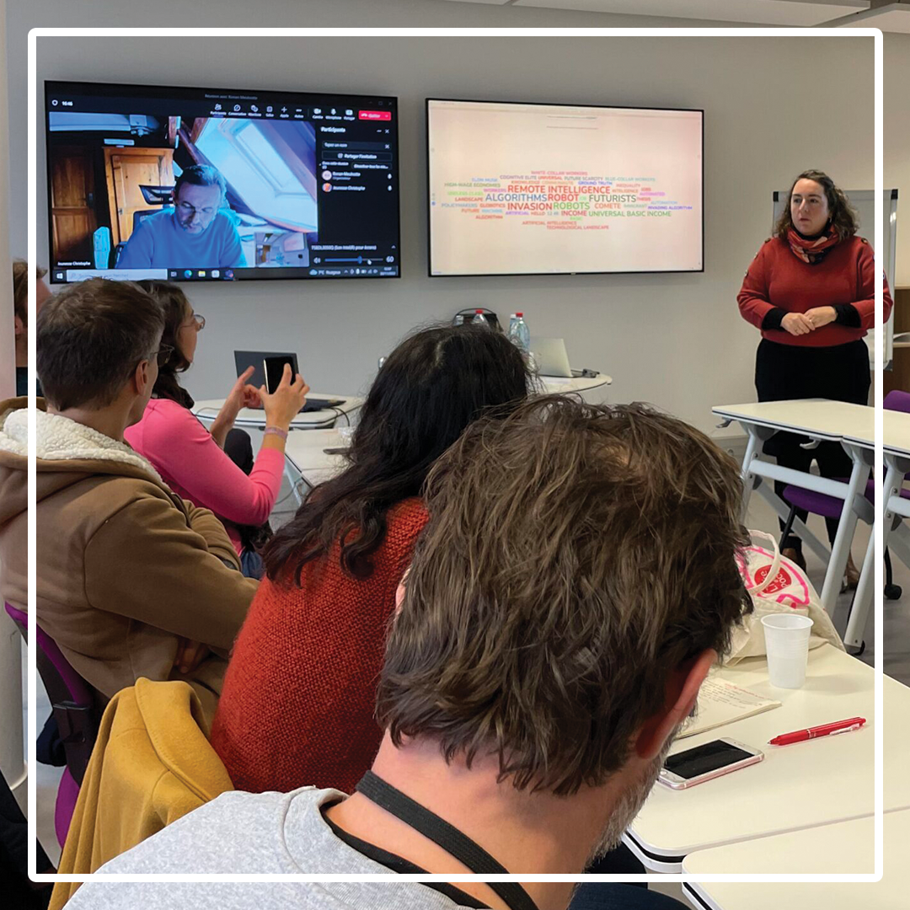

Newsletter № 1 – 1 Avr. 2023
|
L'objectif de notre newsletter est de fournir un contenu actualisé sur les dernières tendances et développements de la recherche et de la pédagogie au sein de notre université
Elle pourrait inclure des actualités en pedagogie ou en recherche impliquant le numérique, des ressources, des opportunités de formation et d'autres informations utiles pour les acteurs et actrices de l'université qui souhaitent utiliser le numérique de manière efficace dans leur enseignement.
Notre Identité - Cellule d’appui au numérique ; Découverte, Accompagnement, Innovation !
L’Agora-Num Pédagogie Recherche, fondée en mai 2022, est une cellule d’appui pour les actrices et les acteurs de l’Université Paris Nanterre qui souhaitent s’engager dans des pratiques pédagogiques ou des activités de recherche impliquant le numérique

Cette cellule d’appui a pour ambition première d’orienter plus efficacement les porteuses et porteurs d’initiatives et de projets. Guichet unique d’orientation et de conseil pour tous les projets individuels ou collectifs pouvant mobiliser des moyens numériques en pédagogie ou en recherche, elle s’attache à faciliter l’accès aux informations sur les lieux, les compétences, les expertises, les ressources et les moyens d’action répartis dans l’ensemble des services et des composantes de l’Université. Elle souhaite également animer des communautés de pratique innovantes autour du numérique, favoriser le partage d’expériences, et jouer un rôle d’interface convivial et constructif entre les besoins exprimés et les ressources disponibles. >> Pour en savoir plus, cliquez ici ! |
CDP - Les communautés de pratique ; Échange, Partage & Innovation !
Un campus complètement MARTO !
Depuis décembre 2022, des communautés de pratique sont animées par l’équipe de l’Agora-Num, qui engage une veille et propose des cafés et des petits-déjeuners thématiques au cours desquels nous pouvons
partager nos expériences, écouter des experts et découvrir de nouvelles manières de pratiquer notre métier, dans un cadre convivial.
Ces communautés de pratique sont ouvertes à toute personne impliquée dans l’accompagnement ou dans la production de cours ou de recherche au sein de notre université (enseignant ou enseignante, chercheur ou chercheuse, doctorant ou doctorante, personnel administratif, etc.), sur simple inscription.  L’interactivité en cours Premier Café pédagogique Mercredi 30 novembre 2022 L’interaction est évidemment fondamentale dans l’activité pédagogique, car elle facilite le bon déroulement du processus d’enseignement et d’apprentissage, en accroissant l’implication des étudiants. Elle n’est toutefois pas toujours aisée à pratiquer – notamment en amphithéâtre ou avec des groupes importants. Dans quelle mesure les outils numériques peuvent-ils nous aider pour stimuler la participation des étudiants ? >> Pour en savoir plus, cliquez ici !  Découvrir ou mieux connaître les ressources proposées par Huma-Num Premier petit déjeuner pédagogique Mercredi 25 janvier 2023 Cette communauté de pratique (CdP) a pour but de faire découvrir les différents services et outils proposés par Huma-Num qui ont été pensés pour accompagner les communautés de recherche selon le cycle de vie des données que l’on peut diviser en six étapes principales : l’organisation (1), la collecte (2), le traitement (3), la préservation (4), la publication (5) puis la réutilisation (6). Ces différents outils et services ont été pensés et créés pour répondre à chacune de ces étapes. Outre cette fonction de partage d’information sur les services et outils d’Huma-Num, cette CdP doit nous permettre d’approfondir leur utilisation, voire de recueillir de nouveaux besoins autour de cette thématique, en lien avec tous les acteurs de l’Université. >> Pour en savoir plus, cliquez ici ! 
Jeux sérieux éducatifs de mise en situation, pour un public d’étudiants Premier café pédagogique Vendredi 10 février 2023 Les jeux sérieux sont de plus en plus utilisés dans les universités pour aider les étudiants à acquérir de nouvelles compétences et connaissances de manière ludique. Ils permettent également de renforcer la motivation et l’engagement des étudiants en leur offrant une expérience d’apprentissage interactive et immersive, en situation. En utilisant des simulations et des scénarios réalistes, les jeux sérieux peuvent aider les étudiants à mieux comprendre les concepts et les théories qu’ils étudient, ce qui peut améliorer leurs performances académiques. Enfin, les jeux sérieux sont également un outil précieux pour développer des compétences professionnelles telles que la communication, le travail en équipe et la résolution de problèmes. >> Pour en savoir plus, cliquez ici ! >> Pour découvrir toutes les communautés de pratique : cliquez ici ! |
Nos ressources - La reponse à toutes vos questions La page "Ressources" a pour but de fournir des informations répondant à la fois aux questions posées par les différentes actrices et acteurs de l'université, ainsi que d'explorer les différentes ressources de l'université, que ce soit
des lieux, des logiciels, des applications, des formations ou des ressources RGPD. Elle est également utile pour les personnes visitant la page spécifiquement pour les informations et les recommandations qu'elle contient, sans avoir forcément un besoin en tête.
La page "Ressources" a pour but de fournir des informations répondant à la fois aux questions posées par les différentes actrices et acteurs de l'université, ainsi que d'explorer les différentes ressources de l'université, que ce soit
des lieux, des logiciels, des applications, des formations ou des ressources RGPD. Elle est également utile pour les personnes visitant la page spécifiquement pour les informations et les recommandations qu'elle contient, sans avoir forcément un besoin en tête.
>> Pour en savoir plus, cliquez ici ! 
Lieux Lieux numeriques 
Logiciels Logiciels et applications |